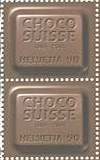
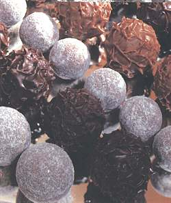
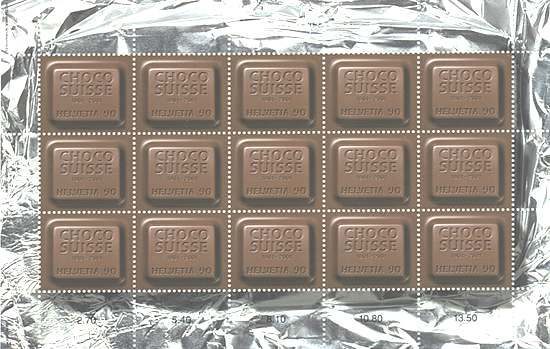

 |
|
|
| The Chocolate Stamps | ||
| From Switzerland | ||
I don't know if you can resist sweets, but what I know is that I definitively can't. Among sweets I especially like chocolate, my preferred one being rather dark, bitter and a bit tough, that eventually prevents me from eating too much at once.
 |
My preferred manufacturers are, no wonder,
those from
Switzerland, and this not just because of my location, but for the reason that
till now I haven't found a better chocolate yet. I know
also that when I go abroad, the Swiss chocolate is among the most desired
things that I can offer,
and this independently of the place where I'm traveling.
In order to celebrate the Centenary of Chocoswiss - the Swiss Association of Chocolate Manufacturers, the Swiss postal administration has issued on 9th of May 2001 a stamp that not only looks like chocolate chocolate, but even smells like chocolate. Fortunately for our descendants and future stamp collectors, it isn't chocolate and as such it cannot be eaten, but only smelled. The stamps will smell more if it is lightly rubbed with the finger. |
The stamp and the sheetlet were designed by Ralph Schraivogel and Yves Netzhammer from Zurich. The dimension of the stamp is: 33.4 x 28 mm. The dimension of the sheetlet, shown below reduced, is 194.4 x 125 mm. Perforation of the stamps: 11.5 x 11.5.

The stamp was printed by the office Helio Courvoisier SA from La Chaux-de-Fonds, on a mottled stamp paper (with visible fibers), in four-colored rotogravure plus varnish (flavoring). This is possibly the last stamp printed by the renown printing office.
Notice. I haven't rubbed my sheetlet, but even so it has a light chocolate smell.
Credits: FOCUS on stamps, The Collector's Magazine of the Swiss Post, 2/2001.
Link: Scratch stamps of Liechtenstein.